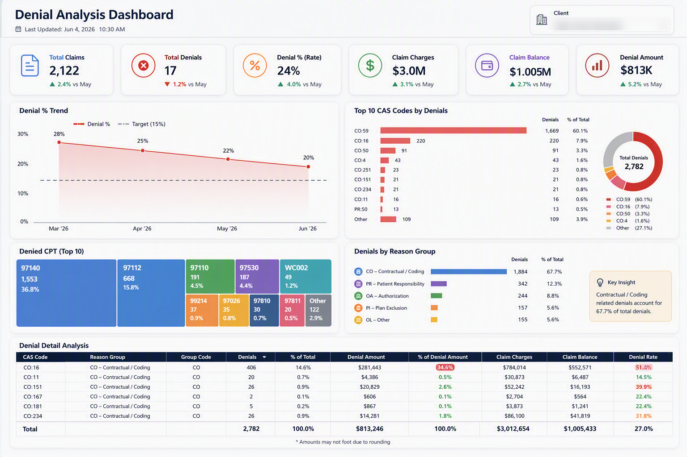
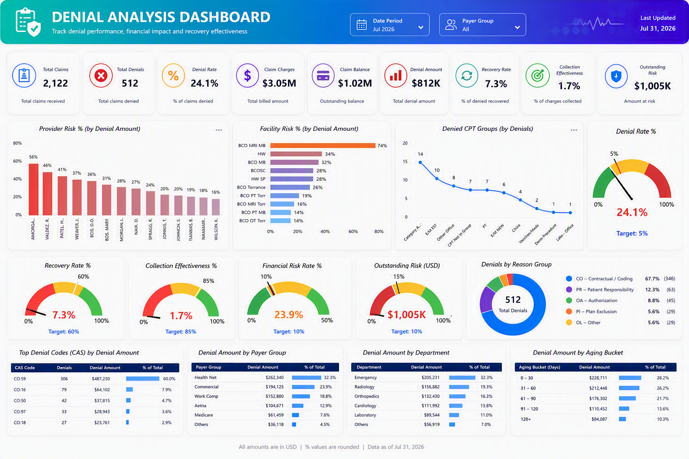
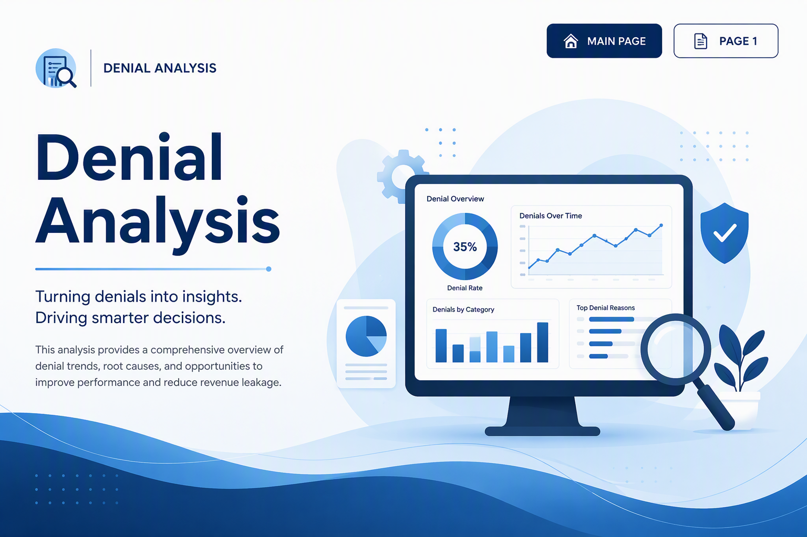

SQL, Power BI, Python and a handful of open-source tools — connected end to end so data moves on its own, and reports stop being a weekly chore.
A denial-analysis reporting suite built for a healthcare billing team — turning raw claims data into a daily read on where revenue is leaking.
Designed two linked dashboard views so the same denial data serves both daily operations and executive review.



I work at the point where raw data becomes something a business can actually act on — pulling it from SQL Server, shaping it in Power BI, and publishing it somewhere people can trust it.
Where a report is repetitive enough to automate, I automate it — usually in Python, wrapped in whatever framework fits the ask rather than the one I default to.
Outside the BI stack, I've containerized open-source dashboards with Docker, built denial-analysis reporting for healthcare billing, and taken on freelance web builds in Wix Studio for clients who just need a site that works.
Happy to talk pipelines, dashboards, repetitive reports that shouldn't be, or a freelance site build.
Email me →